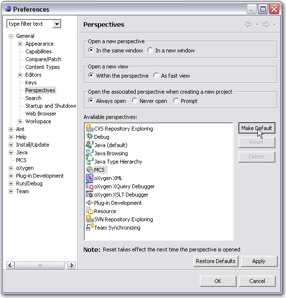
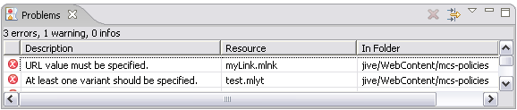

The MCS policy editors operate within the open-source Eclipse Framework. If you have Eclipse installed you may skip this step.
If you are already using the MCS perspective you can skip this step.

When you develop policies MCS validates the their content and reports any problems.
The list of problems is included in the workbench Problems view. If the Problems view is closed when MCS first reports an error, MCS opens the view to show the problem.

When you select an MCS resource and right click on Go To, MCS brings the resource tab to the front (or opens the editor if it is closed), and highlights the control where the problem is
Error messages may also appear in the body of the dialog windows